|
Skin Tutorial
This tutorial explains you step by step how to create and export your own character skins
to the game by using 3D Studio Max 5.1, Character Studio 4 and Remedy 3D Studio Plugins.
The tutorial requires that you already have some working experience with both 3DS Max and
Character Studio.
Related files are available in here: Skin_examples.zip
NOTE: If you want to skip the skin-to-skeleton attachment process and just try out
the KF2-Exporter, there is a _ExportPose.max-file for every example skin included
in the tutorial. The files contain a pre-weighted skin attached to a skeleton that
is ready for export.
Configuring 3D Studio Max
Before starting, set your 3DS Max units to Centimeters.
- Customize/Unit Setup->Metric/Centimeters
Skeleton Setup
Load the "Male" or "Female"-skeleton (Male_SkinModeling_Pose.max or
Female_SkinModeling_Pose.max)
- Select "Bip01"
- Under "Keyframing Tools" uncheck "Body Space Neck rotation"
- Turn on Figure Mode by clicking on the "FigureMode On/Off"-icon. The icon turns
yellow when Figure Mode is on.
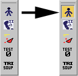
Merging your Skin to the scene
From the File Menu click Merge. Browse to your character model and merge it.
Alternatively you can merge one of the included character skins. The available skins are:
- MaxPayne_Skin.max (male)
- Cleaner_A_Skin.max (male)
- MonaSax_B_Skin.max (female)
If you choose to use one of these skins, you can skip the following steps and go straight to
"Merging your Skin to the Skeleton".
- Collapse your skin into a single "Editable Mesh"-object
- Select all faces and assign them all to Smoothing Group 1
- Check that your character's joints conform to the skeleton joints as well as possible.
- Clean up your mesh: unify normals, remove double faces, edges and stray vertices.
Use "STL Check" and "Normal"-modifiers to do this.
- Reset Xform. From the Utilities tab click on "Reset Xform" to reset the character
scale and transforms. Go to the modifier stack and collapse the stack again to Editable
Mesh.
- Move the skin's Pivot to World origin. From Hierarchy/Pivot/Adjust Pivot click
"Affect Pivot Only" and move the pivot to World origin (0,0,0). Under Adjust
Pivot/Alignment click "Align to World".
Materials
Open the Material Editor and choose "KF Material" as the material type. The
"KF Material" is the only material type supported by the game's skins.
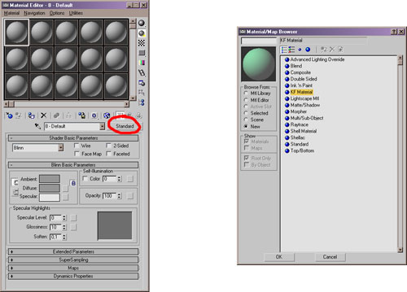
Check "Diffuse", click on the material slot next to it and choose "Bitmap" from
the list.
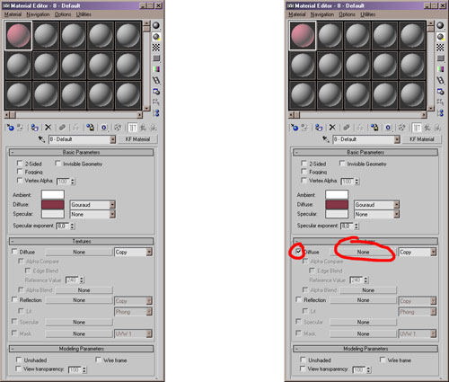
The only supported bitmap type is .DDS. Apply the material to the skin.
Use the "Multi/Sub-Object" material to apply multiple KF materials on one skin
The Multi/Sub-Object material slot numbers correspond to the "Material ID" numbers
under Editable Mesh. Open one of the included skin files for further reference.
Merging your Skin to the Skeleton
- Select your skin
- Apply Physique modifier
- From the Physique Level of Detail/Skin Update choose Deformable and uncheck all
except Link Blending. From Stack Updates check "Reassign Globally"
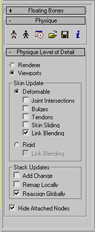
- Click "Attach to Node" and from the rollout choose "Bip01"
- From the Physique Initialization/Link Settings uncheck Continuity and from
Vertex - Link Assignment/Blending Between Links choose "4 links" and uncheck Create
Envelopes. Click "Initialize".
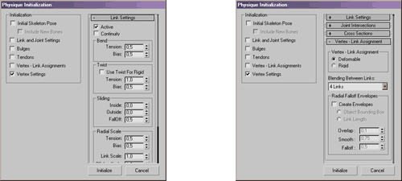
- Disable the unused links. This is done in order to avoid any problems while
loading/saving the skin's vertex weights. Under Physique/Link choose the unused links
and disable them by unchecking Active from the Link Settings. The deactivated links
will turn black.
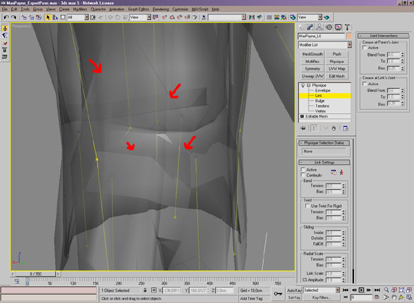
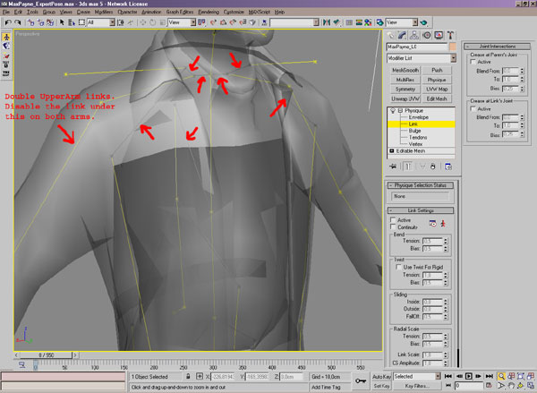
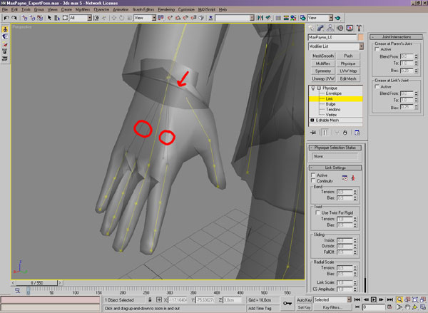
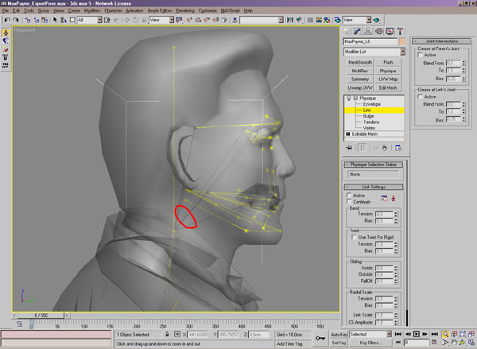
Vertex Weighting
The vertex weighting is done the same way as any other character skinning in Character
Studio. The only limitations are that you can 1) only weight your vertices to a maximum
of four bones and 2) none of the vertices' weight values can go to zero. You can check
if your model meets these limitations by using the "Remedy Physique Tool".
NOTE: If you chose to use one of the skins we provided for the this tutorial, you can
load their weighting directly from the _weights.txt-files. Jump to the next chapter to
learn how to Load and Save vertex weights.
- Select Editable Mesh from your skin's modifier stack
- Click the "Remedy Physique Tool"-icon
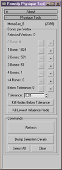
A window opens, displaying the skin's vertex-to-bone influence distribution. In our
example picture we can see how MonaSax_B's 2399 vertices are weighted: 1824 vertices
are weighted to one bone, 521 to two bones, 53 to 3 bones and 1 vertex
to 4 bones. No vertices are weighted to more than 4 bones or are below the tolerance
weight or zero. If your skin has any of these problematic vertices do the following:
- Click the + button next to the ">4 Bones" to select and show the problem vertices.
- Click "Kill Lowest Influence Node" to remove the least affecting bone from the
vertices' weighting.
- Click the + button next to the "Below Tolerance" to select and show the problem
vertices.
- Click "Kill Nodes Below Tolerance" to remove any zero weights from the weighting.
- Click Refresh and check if any vertices have appeared that have "0 bone" weights.
Every vertex must be weighted to at least one bone.
Tip: Lock vertices before modifying the underlying skin. This way you avoid messing
up the vertex weights when making modifications.
Loading/Saving Vertex Weights
To Save and Load your skin's vertex weights click the "MP2_SaveLoad" icon.
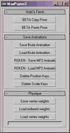
In the bottom of the rollout there are three buttons. The Save/Load vertex weights are
self-explanatory. You can load old skin weights to any new model, but the results will
not be predictable if the new model varies greatly from the original.
"Load indexed weights" works only if the skin's vertex count hasn't been changed (no
vertices have been added or deleted).
Exporting .KF2
Before exporting, check that all the skin transforms are reset (Position [0,0,0], Rotation
[0,0,0] and Scale [100,100,100]). If not, choose Hierarchy->Adjust Transform and click
Reset: Transform and Scale. Check also that the pivot is still located at the origo
(0,0,0).
- Remove zero vertex weights and >4 bone weight assignments by using the "Remedy Physique
Tool"
- Select "Bip01"
- Apply Figure Mode
- Load the Male or Female SkinExport_Pose.fig, depending on your base skeleton type.
The skin's fingers curl up to the export pose. You can revert your biped back to its
original modeling pose by loading Male or Female SkinModeling_Pose.fig.
- From the File Menu choose "Export". Browse to your desired export directory.
Under "Save as Type" choose "KF2 Exporter". Use the following settings:
- [KF2_Exporter.psd].
- Press OK.
Adding a new Skin to the game
If you want the skin to be a player controllable character (like Max Payne or
Mona Sax), you should begin by duplicating the "database\skins\MaxPayne.txt" to
a new file name such as "database\skins\MySkin.txt". Then create a new folder
called "MySkin" and copy your 3dsmax exported "MySkin.kf2" and "MySkin.skd"
files there. Then edit (at the bottom of the file) the "MySkin.txt" to use your
own .kf2 and .skd files.
If you want to add a new enemy to the game, you should use the same process,
but begin with one of the Cleaner skins for example. This is as the player
skins require very different skeletal movement and other definitions to work
properly.
|